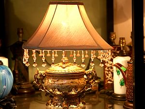
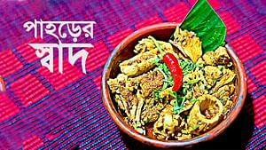

বাড়িতে আলো হবে নিজের মতো, নিজের প্রয়োজনে ও পছন্দে। কে না চায় বসার ঘর, শোবার ঘর বা খাবার ঘরে আলো থাকুক বৈচিত্র্যময় আবেশে? সবাই চায়। আর সে চাওয়া পূরণ করতেই বাজারে পাওয়া যায় হরেক রকমের ল্যাম্পশেড। পছন্দমতো কিনে ঘর সাজিয়ে ফেলুন। তবে মনে রাখতে হবে, বাতি দিয়ে ঘর সাজানোতেও আছে অনেক কায়দাকানুন। সেগুলোর কিছু জানতে হয়ই।

নৌ-পরিবহন মন্ত্রণালয়ের ডেক অফিসার পদের লিখিত পরীক্ষার স্থগিত করা হয়েছে। মার্চেন্ট শিপিং ডেক অফিসার সার্টিফিকেশন পরীক্ষা ও ফিশিং ভেসেল ডেক অফিসার সার্টিফিকেশন পরীক্ষা ১০ জানুয়ারি হওয়ার কথা ছিল। এ লিখিত পরীক্ষা অনিবার্য কারণে স্থগিত করা হয়েছে। স্থগিত পরীক্ষার তারিখ পরে জানানো হবে।
